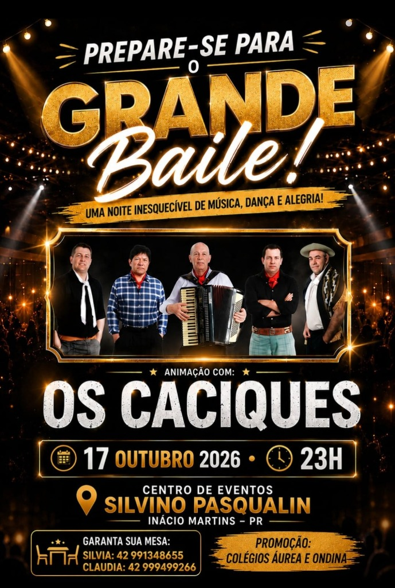

Promoção: Colégios Áurea e Ondina
Há mais de quatro décadas, Os Caciques fazem parte da história dos maiores bailes e da música regional do Paraná. Agora, essa trajetória inesquecível chega com força total a Inácio Martins.
⚡ Mesas limitadas por ordem de reserva com a Silvia: (42) 99134-8655

Cartaz Oficial do Evento
O grupo Os Caciques foi lançado em 1981, na acolhedora cidade de Candói (então distrito de Guarapuava). Ao longo de mais de quatro décadas, o grupo construiu uma trajetória sólida, autêntica e profundamente ligada à cultura fandangueira e à música regionalista do Paraná.
Suas melodias atravessaram gerações, embalaram romances, uniram casais e consagraram bailes por todo o Sul do país. Cada acorde de gaita carrega a identidade de uma terra que honra suas raízes.
“Não é apenas um baile. É o reencontro com as canções que marcaram época e que continuam vivas no coração de quem valoriza a boa música.”
Agora, o Centro de Eventos Silvino Pasqualin em Inácio Martins abre suas portas para receber essa grande festa, promovida com carinho e dedicação pelos Colégios Áurea e Ondina.
As músicas consagradas que marcaram época nos palcos e rádios do Paraná:
Um dos maiores hinos e marcas registradas da história dos Caciques.
A canção romântica clássica que embala casais na pista de dança.
Ritmo fandangueiro acelerado feito para dançar sem parar a noite toda.
O compasso tradicionalista gaúcho e o toque inconfundível do acordeon.
A pegada típica que levanta o salão e faz a poeira subir no fandango.
Você conhece essas músicas.
Agora venha viver esse baile ao vivo!
Repertório completo preparado do início ao fim para quem gosta de pista cheia, passos marcados e vanera de qualidade.
Um ambiente alegre, respeitoso e acolhedor para reunir quem você gosta e celebrar com segurança e comodidade.
Bebidas geladas, atendimento ágil e todo o conforto que o Centro de Eventos Silvino Pasqualin oferece.
As mesas oferecem maior conforto para você e seus convidados durante toda a noite. Atendimento direto e oficial de reservas via WhatsApp:
Consulte o mapa do salão, tire dúvidas e garanta a melhor localização para o seu grupo no WhatsApp:
📍 Endereço: Centro de Eventos Silvino Pasqualin
🏙️ Cidade: Inácio Martins — PR
🗓️ Data & Horário: 17 de Outubro às 23h00
🏫 Promoção: Colégios Áurea e Ondina
Basta entrar em contato via WhatsApp com a Silvia pelo número (42) 99134-8655. Ela apresentará o mapa do salão e as opções disponíveis para você escolher.
A atração principal é o consagrado grupo Os Caciques, com mais de 40 anos de história e grandes sucessos como "Saudade de Guarapuava", "Amor Esquecido", "Fandango de Campanha", "Cordeona Pachola" e "Bugio Valente".
O Grande Baile é uma promoção oficial e tradicional dos Colégios Áurea e Ondina de Inácio Martins - PR.